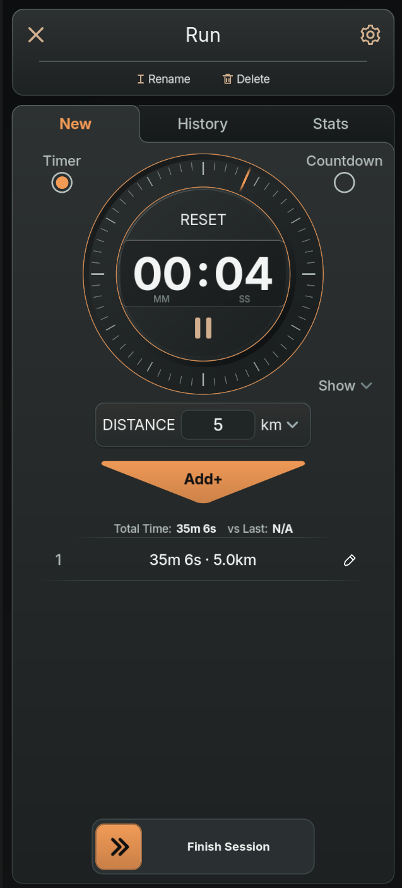
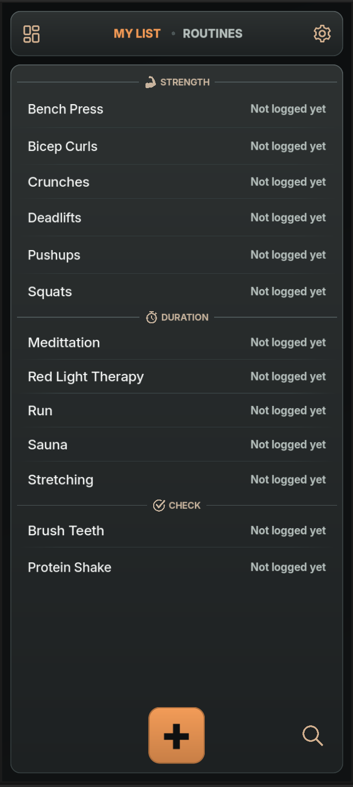
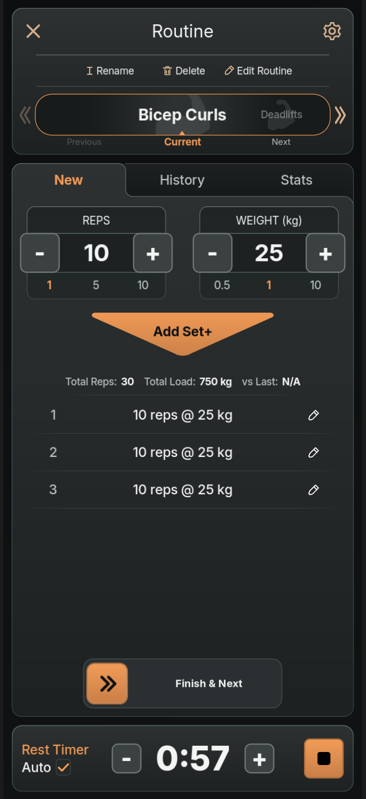
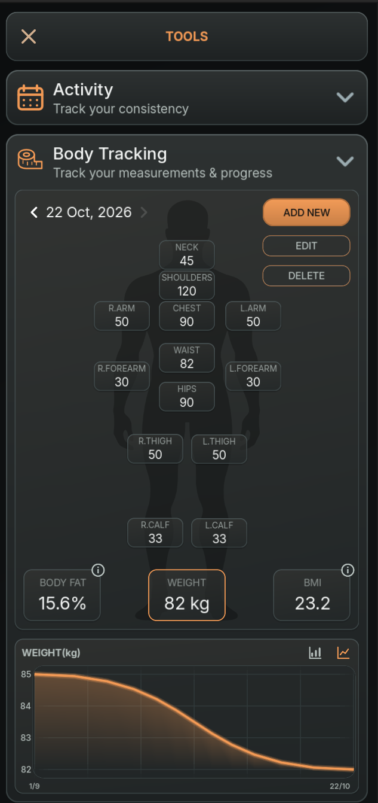
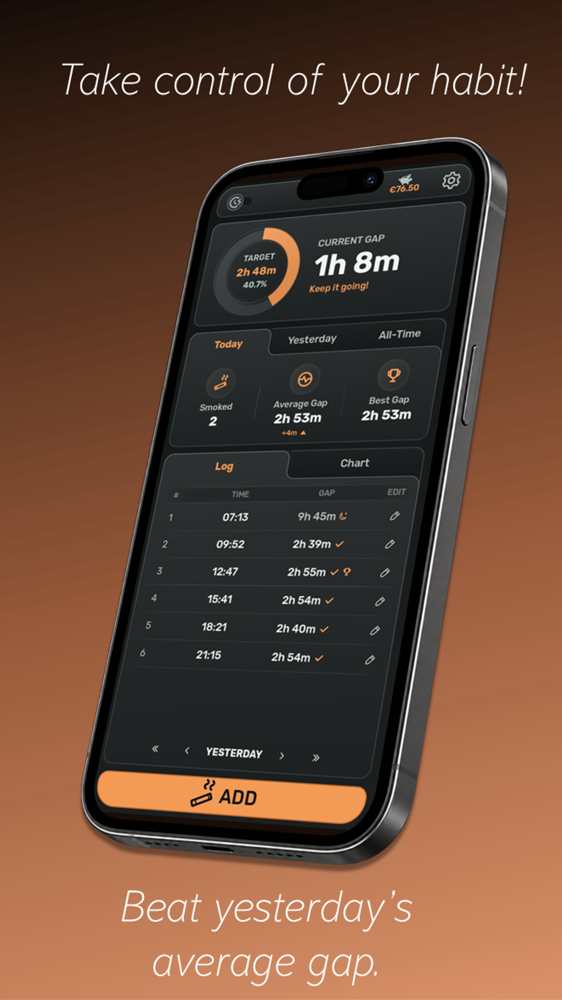
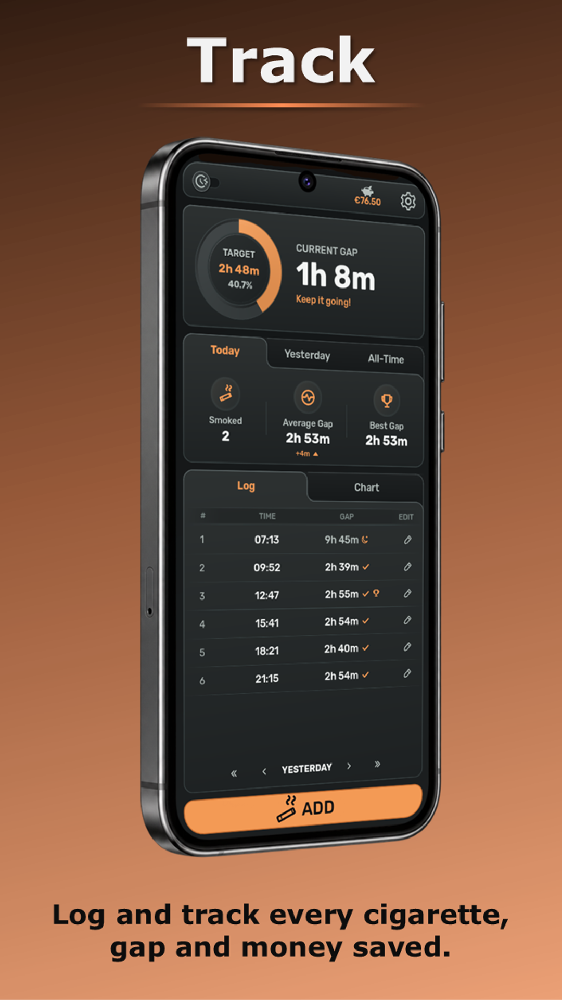
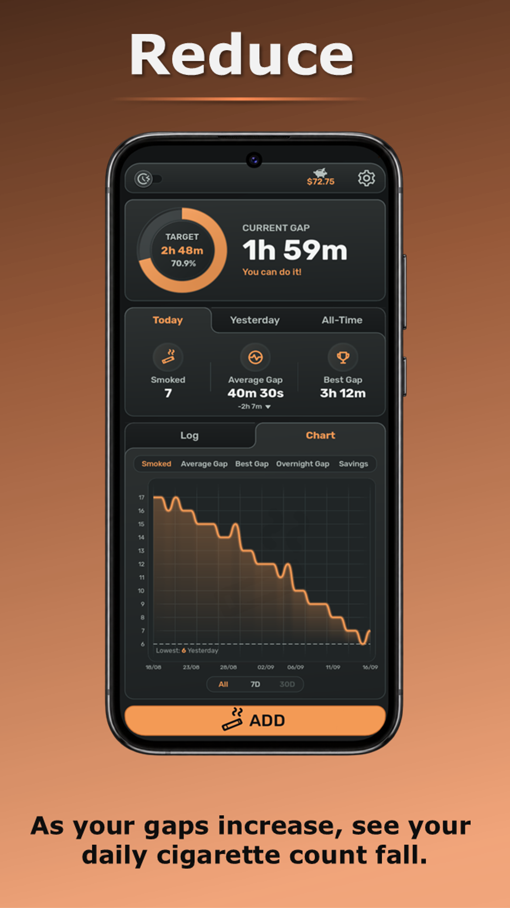

01 / Find your rhythm
Time well spent.
Track a run, a stretch or a moment of stillness. Keep your timed activities alongside your strength training and daily checklists.

Independent studio · Ireland
Focused apps for the habits you want to change and the routines you want to keep. Simple tools. Progress at your pace.
Made for real life. Built independently.
The apps
Two different goals. The same belief in everyday progress.
Waru - Fitness & Routine Tracker
Bring workouts and everyday routines into one place. Log your sets, time your activities and follow the progress that matters to you.
In development. A first look at what’s coming.


A first look / Waru01 / Find your rhythm
Track a run, a stretch or a moment of stillness. Keep your timed activities alongside your strength training and daily checklists.

02 / See the bigger picture
Record body measurements and weight over time, with a clear view of your entries and trends.

Available now · Android
Track the time between cigarettes, understand your patterns and gradually build longer gaps. Reduce at your own pace and move toward quitting when you’re ready.
Get it on Google Play ↗


The studio
Waru Studio is an independent app studio in Ireland, creating practical tools for everyday life. Less friction. More room to keep going.
Say hello